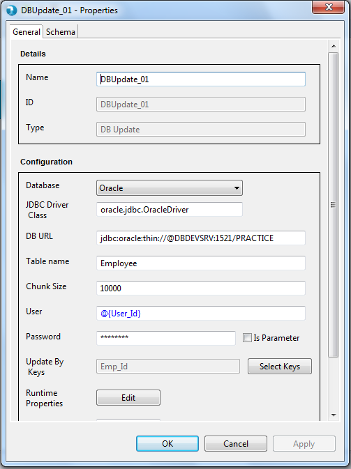
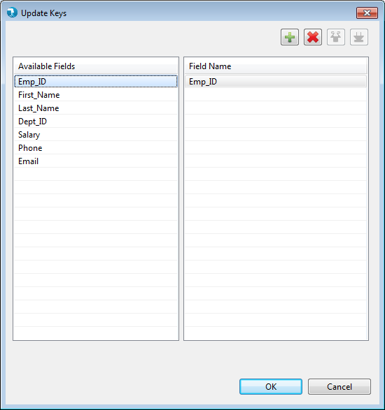
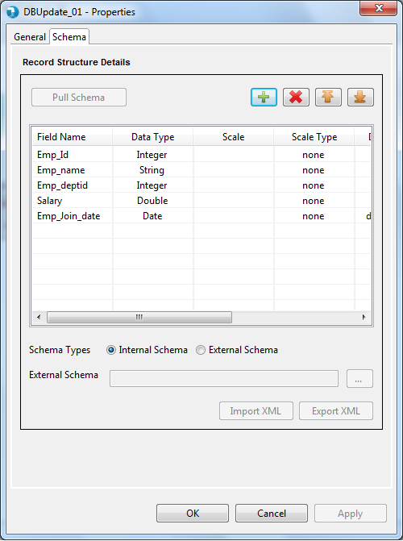
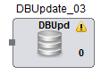
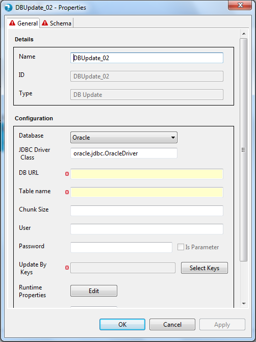
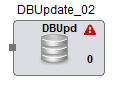

Properties for the DB Update component can be viewed by double clicking the component on canvas. The properties window can also be opened by right-clicking the component icon on the job canvas and clicking on the 'Properties' option.
The properties contain a 'General' tab and a 'Schema' tab. Common properties are present in the General tab. Schema tab displays the option to accept the field schema i.e. field name, data type, scale etc.

- Name - The identifier for the component. This is a mandatory property. This property is pre-populated with the component name, i.e. 'DBUpdate' followed by an incremental number. It can be changed to any custom name. The name property has following restrictions:
- Must be specified and should not be blank.
- Must be unique across the job.
- Accepts only alphabets (a-z), numerals (0-9) and 4 special characters: "_", "-", ",", " " (space)<./span>
- ID - ID signifies unique Id of component. This Id is generated at the time of component creation. This is a non editable field.
- Type - Type defines the type of component within the category. This typically is the name of the component. This is a non editable field.
- Database Name - Database Name is used to specify the name of database to be updated. User has to select database name from dropdown list provided. On selection of database name appropriate driver class name is displayed. If user selects database name as others then user have to manually specify JDBC Driver Class name. Database name is a mandatory property.
- JDBC Driver Class - JDBC Driver Class Name is used to specify the JDBC Driver Class Name. JDBC driver name is automatically generated on selection of Database name . User has to manually type the JDBC Driver Class name in the text box only if other database name is selected.JDBC Driver Class is a mandatory property.
- DB Url - DB Url is used to specify the Database Url. User has to manually type the Database Url in the text box provided. Database Url is a mandatory property.
- Table Name - Table Name is used to specify the Update table Name. User has to manually type the table name in the text box provided. Table name is a mandatory property.
- Chunk size - Chunk size is used to specify chunk size to define the chunks for DB update. User has to manually type the chunk size in the text box provided. Chunk size is optional property.
- User - User is used to specify the User name to Login to Update Database.
- Password - Password is used to specify the password.
- Update By Keys - Update By Key is used to specify the keys that would be used in "WHERE" clause while running the update. User is provided with read-only text box and a button to select the update Keys. User can not manually type update keys in text box provided.
On clicking the Select Key button, user is provided with Update Keys window to select the Keys on which Update has to be performed. Selecting Update Keys is Mandatory.
Keys selected by user are displayed in the read-only textbox on the property window.


- Batch- Batch simply accepts a numeric number starting from 0 to maximum 99 and signifies the batch this component will execute in. By default this is 0.

Schema is mandatory for DB Update component. Schema tab defines the record format on the in port of the DB Update component. A field in schema has multiple attributes as described below.
- Internal - User is provided a Grid to enter the internal schema of the Input Delimited file.
- Field Name - User needs to enter all the Field names in this column.
- Data type - The data type for the field. This is a mandatory attribute. The default data type is "String". Check supported data types page for list of supported data types.
- Date Format - The format for date data type. Refer to java date formats page for acceptable date formats.
- Precision - Precision for a bigdecimal field can be specified here.
- Scale - Scale for a bigdecimal field can be specified here.
- Scale Type - Scale Type accepts values as implicit or explicit for bigdecimal field and none for other data types. Explicit considers the length of ' . ' and implicit ignores length of ' . ' for the bigdecimal field.
- Field Description - User can specify field description.
External - User can provide an external Hydrograph Schema file of XML format. A text box is provided to either manually type or use the Browse button to select the schema file from File system. The External schema file path is resolved during run time and replaced with the contents of the file in the Job XML.
The DB Update component applies validations to the mandatory fields as described above. Upon placing the DB Update component on job canvas for the first time (from component palette), the component shows up a warning icon as mandatory properties are not provided.

The properties window also displays error icon on mandatory fields if it has an incorrect value. The error icon is displayed on the tab as well, if any of the field within the tab has some error.

If the properties window has some error even after user visit's it once, then the warning icon on the DB Update component on the job canvas changes to error icon. This error icon is removed only when all the mandatory fields are supplied with correct values.
